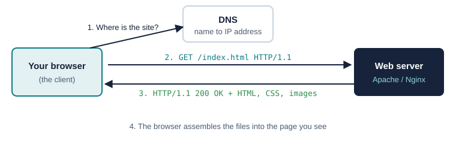

Web Server Basics
A web server stores the files that make up a website and sends them to whoever asks for them.
What Is a Web Server?
The restaurant analogy: think of a web server like a restaurant kitchen. When you order food (your browser requests a webpage), the kitchen (the web server) takes your order, prepares what you asked for, and sends it out to your table (your screen).
- You ask: your browser requests a webpage from the server.
- It stores: the server keeps every file that makes up the site.
- It delivers: the server sends back exactly what was requested.
- Or says no: if a file is missing, it replies with a
404error.
Hardware vs. Software
The term “web server” means two things that work together: the physical machine and the program running on it.
Hardware: the physical machine
- The actual computer that runs around the clock
- Storage for all website files, a fast processor, and a permanent internet connection
Like the building and wiring of a store.
Software: the computer program
- Reads incoming requests and finds the right files to send back
- Handles thousands of visitors at once and can be tuned for security and speed
- Examples: Apache, Nginx, Microsoft IIS
Like the staff working inside the store.
Static vs. Dynamic Web Servers
| Feature | Static | Dynamic |
|---|---|---|
| Content | Same pre-built files for every visitor | Pages built for each visitor from a database |
| Setup | Fast and simple, no database needed | Needs application code and a database |
| Can do | Show information | Logins, shopping carts, personalization |
| Good for | Portfolios, personal and small business sites | YouTube, Instagram, Amazon |
| Analogy | A printed flyer | A chef cooking a custom meal |
This website is itself static: GitHub Pages sends the same HTML and CSS files to everyone.
How a Web Server Works, Step by Step
All of this happens automatically, usually in less than a second.

- You type a web address such as
www.google.cominto your browser. - DNS finds the server. DNS, the internet’s phone book, turns the name into the server’s numeric IP address.
- The browser sends a request asking for the page. This message is called an HTTP request.
- The server responds with the files and a
200 OKstatus, or404 Not Foundif the page doesn’t exist. - The browser builds the page from the text, images, colors and layout it received.
How Servers and Browsers Talk: HTTP
HTTP (HyperText Transfer Protocol) is the rulebook browsers and servers both follow. Its messages are plain text, and the server doesn’t remember you between requests, which is why websites use cookies.
| Method | Meaning |
|---|---|
GET | Give me this page |
POST | Here is some information (for example, a form) |
PUT | Update this existing item |
DELETE | Remove this item |
- HTTPS adds encryption, like putting your message in a locked box only the server can open.
- HTTP/2 lets the browser ask for many files at once over one connection.
- HTTP/3 works better on phones and unreliable connections.
Why Use a Dedicated Web Server?
A website could technically run on a laptop, but a dedicated server in a data center is:
- Always on, running 24/7/365 with almost no downtime.
- Always connected through fast, reliable data-center networks.
- At a permanent address, unlike home internet addresses that change.
- Professionally maintained by a team that fixes problems quickly.
- Built for traffic spikes that would crash a normal computer.
- Safe and backed up with backup power, cameras and fire suppression.
The Parts That Make Up a Web Server
Core server software
The main program, like Apache or Nginx, that receives requests and sends back pages.
File storage
HTML, CSS, JavaScript, images and video stored on disk.
Application layer
Extra software for logins, accounts and anything more complex than a static page.
Database
Stores usernames, passwords and other data the site needs.
Load balancer
Splits visitors across several servers so none gets overwhelmed.
Memory cache
Keeps popular pages in fast memory to send them instantly.
Encryption handler
Handles HTTPS so nobody can read passwords in transit.
Access logs
A record of every request: who asked for what and whether it worked.